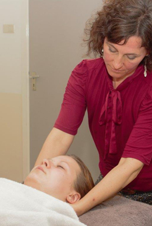

Schoonheidssalon Orange Flower
Voor natuurlijke schoonheid en balans

Welkom op mijn website
Mijn naam is Karin Claessens. Ik ben vanaf 1987 werkzaam geweest in de reguliere gezondheidszorg en werk nu al jaren met veel plezier in mijn eigen schoonheidssalon. Naast de passie voor huidverzorging draag ik graag bij aan uw algehele welzijn. Door de jarenlange ervaring en holistische manier van werken, heb ik geleerd om mijn behandelingen persoonlijk te maken en goed af te stemmen.
U kunt bij mij terecht voor schoonheidsbehandelingen massage/deelmassages gericht op ontspanning of klachtvermindering. Nieuw zijn de Orange Flower Specials die ik zelf ontwikkeld heb, meer gericht op specifieke behoeftes van de klant. Dit zijn de Orange Flower Anti age, de Orange Flower Anti stress, de Orange Flower Purify en een speciale behandeling voor de aanstaande moeder, de Orange Flower Mama. Ik heb ervaring in verschillende soorten massagetechnieken zoals lymfedrainage, gewrichtsontspanning, bindweefselmassage, maar ook gewoon klassieke massage (sportmassage).
Ik werk uitsluitend met biologische en natuurlijke producten. De unieke productlijnen waarmee ik werk is het Italiaanse merk Lakshmi (bio- eco gecertificeerd, Ayurvedisch). U kunt u mij altijd vragen om een huidadvies.
Ook werk ik met kruidenoliën -en pakkingen die klachtgericht kunnen worden ingezet zoals bij gewrichtspijn, eczeem en spierpijn. Ik bied u behandelingen die gericht zijn op innerlijk welzijn, huidverbetering en klachtvermindering.
Behandelingen worden gegeven vanaf 45 minuten (€45). Prijzen kunt u vinden bij de desbetreffende behandeling.
Wilt u graag een behandeling dan kunt u mij bellen/whatsappen of een mail sturen.
Graag ontmoet ik u binnenkort!
Openingstijden:
3 dagen per week, op afspraak
Adres: Het Burkink 1, Warnsveld
E-mail: info@orange-flower.nl
Klik hier voor recensies